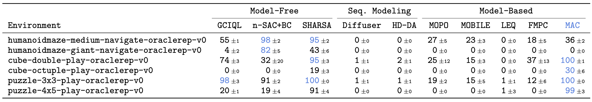
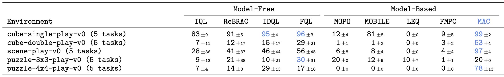

Model-Based RL with Action Chunks (MAC) is a simple yet powerful offline model-based RL method that leverages 100-step model rollouts for value estimation, by utilizing rejection sampling from an expressive, flow-based, action-chunked behavior cloning (BC) policy.
MAC is simple and robust to hyperparameters, making it easy to implement and adapt to other domains.
MAC achieves strong performance and scales effectively to large datasets. It attains state-of-the-art results on the standard OGBench manipulation benchmark, and significantly outperform prior model-based approaches on 100M-scale datasets.
Challenges
Long-horizon tasks require long-horizon rollouts, since the bias introduced by bootstrapping in value updates accumulates over time.
This creates a unique challenge in model-based RL, where prediction errors from the learned world model accumulate over time.
Therefore, we need methods to perform long-horizon rollouts while keeping model prediction errors small.
Model-based RL with Action Chunking (MAC)
In this paper, we do not try to improve the world model to address this issue.
Rather, we mitigate the inaccuracy of the world model by changing how we model the policy (actions).
Action chunking
We utilize action-chunked policy, critic, and world model instead of single-step models.
Action chunking reduces the number of model execution, mitigating the compounding error problem.
However, this introduces several challenges:
- Action-chunk distributions are multi-modal and complex for gaussian policies.
- It becomes harder to prevent the policy from exploiting the world model, as they have more dimensions.
Flow rejection sampling
To handle these challenges, we employ rejection sampling from an flow behavioral action chunk policy.
This formulation ensures that the action chunk is in-distribution and expressive enough to model the behavioral policy.
As rejection sampling is generally more robust to hyperparameters, we use a single hyperparameter set for our method-related hyperparameters, constrast to prior model-based works.
Experiments
Long-horizon tasks with 100M-scale dataset

MAC significantly outperforms the prior model-based approaches in all tasks.
MAC also outperforms model-free baselines in manipulation tasks.
This experiments shows the scalability of MAC to large datasets.
Reward-based benchmarks with 1M-scale dataset

MAC outperforms all other baselines in standard single-task benchmarks (except puzzle-3x3).
These experiments shows capability of MAC in standard small-data regime.
BibTeX
@article{park2025_MAC,
title={Scalable Offline Model-Based RL with Action Chunking},
author={Kwanyoung Park, Seohong Park, Youngwoon Lee, Sergey Levine},
journal={arXiv Preprint},
year={2025}
}